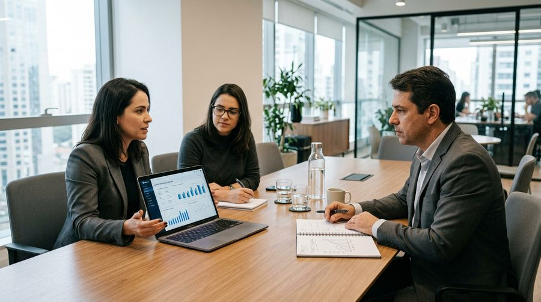

Com sede própria no bairro do Farol, a Concentre Contabilidade atende empresas em toda Maceió e em todo o Brasil. Na Ponta Verde, o mais nobre polo comercial e de saúde da capital, oferecemos assessoria contábil de excelência, planejamento tributário avançado e BPO financeiro sob medida para clínicas médicas, consultórios odontológicos, escritórios de advocacia, restaurantes e prestadores de serviços.

Com alta concentração de consultórios de saúde, restaurantes conceituados e escritórios de prestação de serviços intelectuais, a Ponta Verde exige uma contabilidade proativa que vá além do simples envio de guias de impostos.
Médicos, dentistas, psicólogos e dermatologistas situados em centros médicos como o Harmony Trade Center e edifícios clínicos da Sandoval Arroxelas e Deputado José Lages. Aplicamos o Fator R para reduzir a tributação de 15,5% para 6% no Simples Nacional e planejamos a equiparação hospitalar no Lucro Presumido.
Restaurantes, bistrôs, bares e cafeterias da orla da Ponta Verde e ruas adjacentes. Realizamos segregação correta de tributos monofásicos de PIS/COFINS (bebidas frias), apuração detalhada de ICMS Alagoas e controle preciso de turnos de trabalho na folha de pagamento.
Imobiliárias de alto padrão, corretores autônomos, consultorias de TI, agências e bancas de advocacia. Estruturamos regimes tributários que evitam bitributação de comissões e garantem segurança societária para os sócios perante a Receita Federal.
Alie rigor técnico e tecnologia para transformar obrigações legais em economia e clareza de gestão.
Simulação comparativa entre Simples Nacional, Lucro Presumido e Lucro Real. Para médicos e dentistas da Ponta Verde, ajustamos o pró-labore e a folha para garantir a menor alíquota permitida por lei perante o Fisco municipal e federal.
Saiba mais sobre consultoria tributária →Terceirize o controle diário de notas fiscais, conciliação de cartões de crédito e Pix, contas a pagar e cobrança de inadimplentes. Tenha relatórios de fluxo de caixa e DRE gerencial sem precisar contratar uma equipe interna de tesouraria.
Saiba mais sobre BPO financeiro →Processo ágil e desburocratizado para formalização de empresas perante a JUCAL, Receita Federal, SEFAZ/AL e Prefeitura de Maceió. Obtenção do alvará de funcionamento e enquadramento seguro da atividade médica ou comercial.
Saiba mais sobre abertura empresarial →Emissão expressa de e-CNPJ e e-CPF (A1 ou A3) por videoconferência e domicílio empresarial legal para profissionais que atuam na Ponta Verde de forma remota ou home office e necessitam de endereço comercial oficial em Maceió.
Conhecer endereço fiscal →Veja a diferença prática de carga tributária para uma clínica ou empresa de serviços que fatura R$ 40.000/mês na Ponta Verde:
* Valores ilustrativos baseados na Lei Complementar 123/2006. O cálculo exato depende da atividade do CNPJ, folha de pagamento e histórico de faturamento dos últimos 12 meses.
Esclareça os principais pontos sobre atendimento, transição de escritório e redução legal de tributos.
A migração é 100% conduzida por nossa equipe técnica, de forma ética e sem burocracia para você. Entramos em contato com a contabilidade anterior, solicitamos a documentação fiscal e contábil e fazemos um onboarding completo sem interromper a rotina dos seus atendimentos.
Sim. Nossa sede executiva fica no tradicional bairro do Farol, a apenas 10 minutos da Ponta Verde. Agendamos reuniões presenciais na nossa sede ou atendemos com total agilidade por videoconferência, WhatsApp corporativo e plataforma em nuvem.
O ISS (Imposto Sobre Serviços) em Maceió varia de 2% a 5% conforme a atividade perante a SEMEC. No Simples Nacional, ele é unificado no DAS. Em sociedades uniprofissionais de médicos ou advogados, analisamos a viabilidade do ISS Fixo para máxima economia tributária.
Basta enviar os extratos do Simples Nacional (PGDAS-D) ou DCTF dos últimos 12 meses, juntamente com a folha de pagamento e extrato bancário básico. Nossa equipe tributária elabora uma análise sigilosa demonstrando eventuais créditos acumulados ou oportunidades de economia imediata.